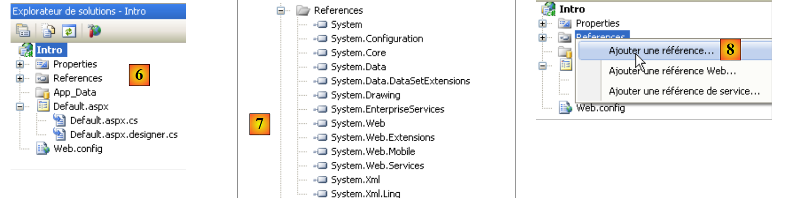
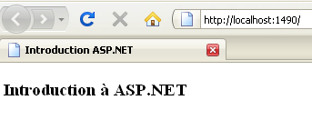
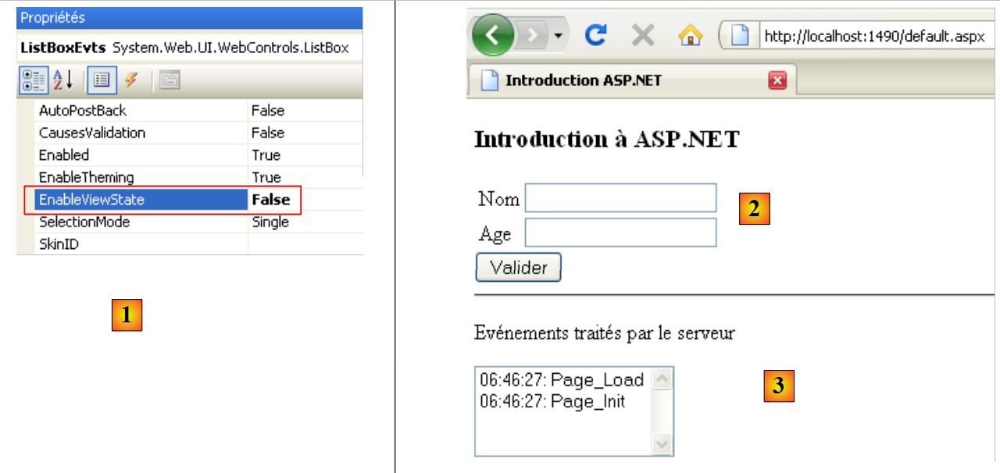
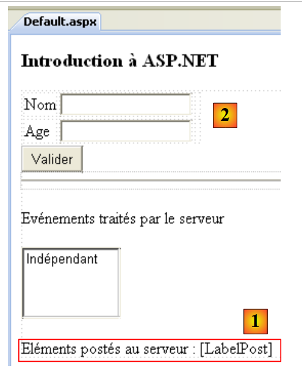
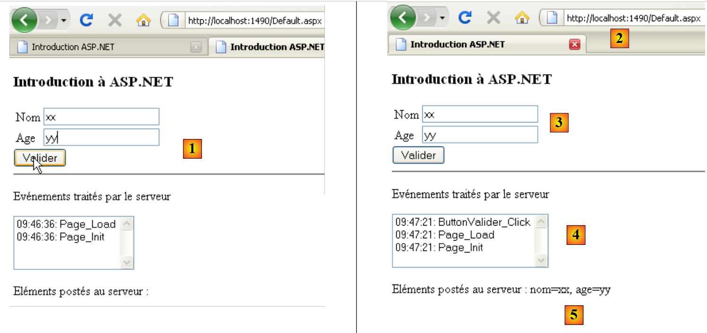
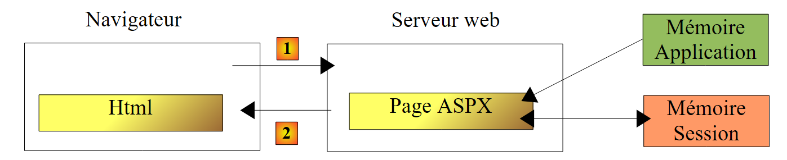
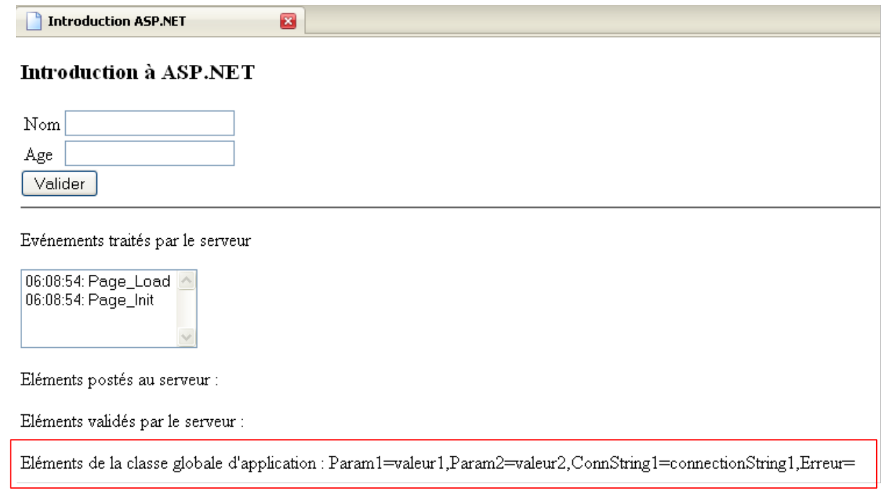
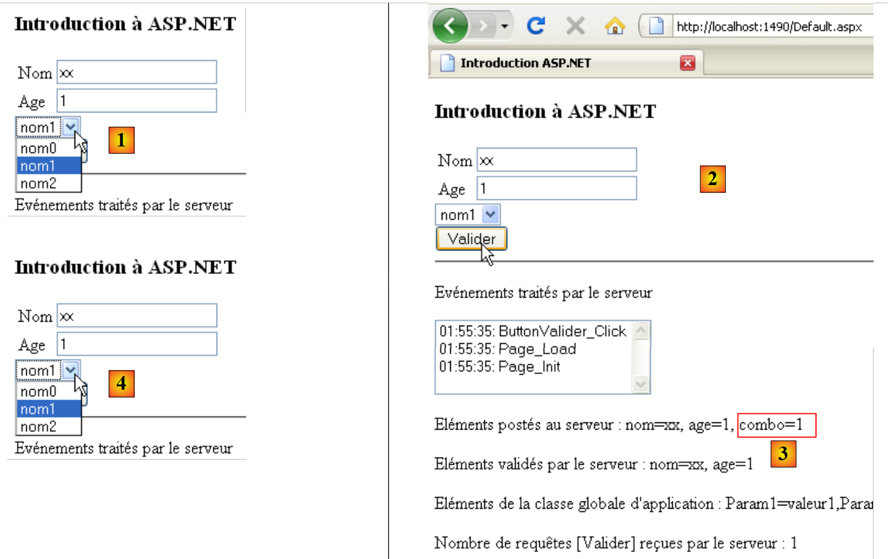
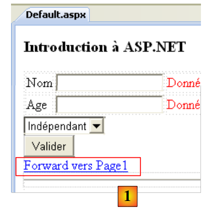

2. Eine kurze Einführung in ASP.NET
Wir möchten hier anhand einiger Beispiele die Konzepte von ASP.NET vorstellen, die uns im weiteren Verlauf des Dokuments nützlich sein werden. Diese Einführung reicht nicht aus, um die Feinheiten des Client-Server-Austauschs einer Webanwendung zu verstehen. Dazu empfiehlt sich die Lektüre von:
- Programmierung ASP.NET [Webentwicklung mit ASP.NET 1.1 (2004)]
Diese Einführung richtet sich an diejenigen, die schnell vorankommen möchten und bereit sind, zunächst einige möglicherweise wichtige Punkte außer Acht zu lassen. Im weiteren Verlauf des Dokuments werden diese Punkte vertieft. Wer sich mit ASP.NET auskennt, kann direkt zu Abschnitt 3 übergehen.
2.1. Ein Beispielprojekt
2.1.1. Erstellung des Projekts
 |
- In [1] wird mit Visual Web Developer ein neues Projekt erstellt
- in [2] wählt man ein Webprojekt in Visual C# aus
- In [3] geben wir an, dass wir eine Webanwendung erstellen möchten. ASP.NET
- in [4] gibt man der Anwendung einen Namen. Es wird ein Ordner für das Projekt mit diesem Namen erstellt.
- In [5] geben Sie den übergeordneten Ordner des Projektordners [4] an
 |
- In [6] wird das Projekt erstellt
- [Default.aspx] ist eine standardmäßig erstellte Webseite. Sie enthält Tags HTML und Tags ASP.NET
- [Default.aspx.cs] enthält den Code zur Verwaltung der vom Benutzer ausgelösten Ereignisse auf der Seite [Defaul.aspx], die in seinem Browser angezeigt wird
- [Default.aspx.designer.cs] enthält die Liste der Komponenten ASP.NET der Seite [Default.aspx]. Jede auf der Seite [Default.aspx] platzierte Komponente ASP.NET führt zur Deklaration dieser Komponente in [Default.aspx.designer.cs].
- [Web.config] ist die Konfigurationsdatei des Projekts ASP.NET.
- [References] ist die Liste der vom Webprojekt verwendeten DLL-Dateien. Diese DLL-Dateien sind Klassenbibliotheken, auf die das Projekt zurückgreift. In [7] befindet sich die Liste der DLL, die standardmäßig in den Projektverweisen enthalten sind. Die meisten davon sind überflüssig. Sollte das Projekt eine DLL verwenden müssen, die nicht in [7] aufgeführt ist, kann diese über [8] hinzugefügt werden.
2.1.2. Die Seite [Default.aspx]
Wenn das Projekt über [Ctrl-F5] ausgeführt wird, wird die Seite [Default.aspx] in einem Browser angezeigt:
 |
- in [1] die Seite URL des Webprojekts. Visual Web Developer verfügt über einen integrierten Webserver, der gestartet wird, wenn die Ausführung eines Projekts angefordert wird. Er lauscht auf einem zufälligen Port, hier 1490. Der Standard-Port ist normalerweise Port 80. Bei [1] wird keine Seite angefordert. In diesem Fall wird die Seite [Default.aspx] angezeigt, daher auch ihr Name als Standardseite.
- In [2] ist die Seite [Default.aspx] leer.
- In Visual Web Developer kann die Seite [Default.aspx] [3] visuell (Registerkarte [Design]) oder mithilfe von Tags (Registerkarte [Source]) erstellt werden
- in [4], die Seite [Defaul.aspx] im Modus [Design]. Sie wird erstellt, indem man Komponenten aus der Toolbox [5] darauf ablegt.
 |
Der Modus [Source] [6] ermöglicht den Zugriff auf den Quellcode der Seite:
<%@ Page Language="C#" AutoEventWireup="true" CodeBehind="Default.aspx.cs" Inherits="Intro._Default" %>
<!DOCTYPE html PUBLIC "-//W3C//DTD XHTML 1.0 Transitional//EN" "http://www.w3.org/TR/xhtml1/DTD/xhtml1-transitional.dtd">
<html xmlns="http://www.w3.org/1999/xhtml">
<head runat="server">
<title></title>
</head>
<body>
<form id="form1" runat="server">
<div>
</div>
</form>
</body>
</html>
- Zeile 1 ist eine Anweisung ASP.NET, die bestimmte Eigenschaften der Seite auflistet
- Die Anweisung Page gilt für eine Webseite. Es gibt weitere Anweisungen wie Application, WebService, …, die für andere Objekte gelten ASP.NET
- Das Attribut CodeBehind gibt die Datei an, die die Ereignisse der Seite verwaltet
- Das Attribut Language gibt die von der Datei CodeBehind verwendete Sprache .NET an
- Das Attribut Inherits gibt den Namen der Klasse an, die in der Datei CodeBehind definiert ist
- Das Attribut AutoEventWireUp="true" gibt an, dass die Verknüpfung zwischen einem Ereignis in [Default.aspx] und seinem Handler in [Defaul.aspx.cs] über den Namen des Ereignisses erfolgt. Somit wird dasEreignis Load auf der Seite [Default.aspx] wird durch die Methode Page_Load der Klasse Intro._Default verarbeitet, die durch das Attribut Inherits definiert ist.
- Die Zeilen 4–14 beschreiben die Seite [Defaul.aspx] mithilfe von Tags:
- klassische HTML-Tags wie das Tag <body> oder <div>
- ASP.NET. Dies sind die Tags, die das Attribut runat="server" besitzen. Die Tags ASP.NET werden vom Webserver verarbeitet, bevor die Seite an den Client gesendet wird. Sie werden in Tags mit dem Attribut HTML umgewandelt. Der Browser des Clients erhält somit eine Standardseite mit dem Attribut HTML, in der keine Tags mit dem Attribut ASP.NET mehr vorhanden sind.
Die Seite [Default.aspx] kann direkt über ihren Quellcode bearbeitet werden. Dies ist manchmal einfacher, als den Modus [Design] zu verwenden. Wir ändern den Quellcode wie folgt:
<%@ Page Language="C#" AutoEventWireup="true" CodeBehind="Default.aspx.cs" Inherits="Intro._Default" %>
<!DOCTYPE html PUBLIC "-//W3C//DTD XHTML 1.0 Transitional//EN" "http://www.w3.org/TR/xhtml1/DTD/xhtml1-transitional.dtd">
<html xmlns="http://www.w3.org/1999/xhtml">
<head runat="server">
<title>Introduction ASP.NET</title>
</head>
<body>
<h3>Introduction à ASP.NET</h3>
<form id="form1" runat="server">
<div>
</div>
</form>
</body>
</html>
In Zeile 6 geben wir der Seite mithilfe des Tags HTML <title> einen Titel. In Zeile 9 fügen wir Text in den Hauptteil (<body>) der Seite ein. Wenn wir das Projekt ausführen (Strg-F5), erhalten wir im Browser folgendes Ergebnis:
 |
2.1.3. Die Dateien [Default.aspx.designer.cs] und [Default.aspx.cs]
Die Datei [Default.aspx.designer.cs] deklariert die Komponenten der Seite [Defaul.aspx]:
//------------------------------------------------------------------------------
// <automatisch generiert>
// Dieser Code wurde von einem Tool generiert.
// Runtime-Version: 2.0.50727.3603
//
// Änderungen an dieser Datei können zu Fehlfunktionen führen und gehen verloren, wenn
// der Code neu generiert wird.
// </auto-generated>
//------------------------------------------------------------------------------
namespace Intro {
public partial class _Default {
/// <summary>
/// Steuerelement „form1“.
/// </summary>
/// <remarks>
/// Automatisch generiertes Feld.
/// Zum Bearbeiten verschieben Sie die Felddeklaration aus der Designer-Datei in die Code-Behind-Datei.
/// </remarks>
protected global::System.Web.UI.HtmlControls.HtmlForm form1;
}
}
In dieser Datei befindet sich die Liste der Komponenten ASP.NET der Seite [Default.aspx], die über eine Kennung verfügen. Sie entsprechen den Tags von [Default.aspx], die das Attribut runat="server" und das Attribut id besitzen. Somit entspricht die Komponente in Zeile 23 oben dem Tag
<form id="form1" runat="server">
von [Default.aspx].
Der Entwickler interagiert kaum mit der Datei [Default.aspx.designer.cs]. Dennoch ist diese Datei nützlich, um die Klasse einer bestimmten Komponente zu ermitteln. So ist unten zu sehen, dass die Komponente form1 vom Typ HtmlForm ist. Der Entwickler kann diese Klasse dann untersuchen, um ihre Eigenschaften und Methoden zu ermitteln. Die Komponenten der Seite [Default.aspx] werden von der Klasse der Datei [Default.aspx.cs] verwendet:
using System;
using System.Collections.Generic;
using System.Linq;
using System.Web;
using System.Web.UI;
using System.Web.UI.WebControls;
namespace Intro
{
public partial class _Default : System.Web.UI.Page
{
protected void Page_Load(object sender, EventArgs e)
{
}
}
}
Es ist zu beachten, dass die in den Dateien [Default.aspx.cs] und [Default.aspx.designer.cs] definierte Klasse identisch ist (Zeile 10): Intro._Default. Das Schlüsselwort partial ermöglicht es, die Deklaration einer Klasse auf mehrere Dateien zu verteilen, in diesem Fall auf zwei.
In Zeile 10 oben ist zu sehen, dass die Klasse [_Default] die Klasse [Page] erweitert und deren Ereignisse erbt. Eines davon ist das Ereignis Load, das auftritt, wenn die Seite vom Webserver geladen wird. In Zeile 12 befindet sich die Methode Page_Load, die das Ereignis Load der Seite verarbeitet. In der Regel wird hier die Seite initialisiert, bevor sie im Browser des Clients angezeigt wird. In diesem Fall führt die Methode Page_Load keine Aktion aus.
Die einer Webseite zugeordnete Klasse, hier die Klasse Intro._Default, wird zu Beginn der Client-Anfrage erstellt und gelöscht, sobald die Antwort an den Client gesendet wurde. Sie kann daher nicht dazu dienen, Informationen zwischen zwei Anfragen zu speichern. Hierfür muss das Konzept der Benutzersitzung verwendet werden.
2.2. Die Ereignisse einer Webseite ASP.NET
Wir erstellen die folgende Seite [Default.aspx]:
<%@ Page Language="C#" AutoEventWireup="true" CodeBehind="Default.aspx.cs" Inherits="Intro._Default" %>
<!DOCTYPE html PUBLIC "-//W3C//DTD XHTML 1.0 Transitional//EN" "http://www.w3.org/TR/xhtml1/DTD/xhtml1-transitional.dtd">
<html xmlns="http://www.w3.org/1999/xhtml">
<head runat="server">
<title>Introduction ASP.NET</title>
</head>
<body>
<h3>Introduction à ASP.NET</h3>
<form id="form1" runat="server">
<div>
<table>
<tr>
<td>
Nom</td>
<td>
<asp:TextBox ID="TextBoxNom" runat="server"></asp:TextBox>
</td>
<td>
</td>
</tr>
<tr>
<td>
Age</td>
<td>
<asp:TextBox ID="TextBoxAge" runat="server"></asp:TextBox>
</td>
<td>
</td>
</tr>
</table>
</div>
<asp:Button ID="ButtonValider" runat="server" Text="Valider" />
<hr />
<p>
Evénements traités par le serveur</p>
<p>
<asp:ListBox ID="ListBoxEvts" runat="server"></asp:ListBox>
</p>
</form>
</body>
</html>
Der Modus [Design] der Seite ist wie folgt:
 |
Die Datei [Default.aspx.designer.cs] lautet wie folgt:
namespace Intro {
public partial class _Default {
protected global::System.Web.UI.HtmlControls.HtmlForm form1;
protected global::System.Web.UI.WebControls.TextBox TextBoxNom;
protected global::System.Web.UI.WebControls.TextBox TextBoxAge;
protected global::System.Web.UI.WebControls.Button ButtonValider;
protected global::System.Web.UI.WebControls.ListBox ListBoxEvts;
}
}
Darin sind alle Komponenten ASP.NET der Seite [Default.aspx] mit einer Kennung enthalten.
Wir passen die Datei [Default.aspx.cs] wie folgt an:
using System;
namespace Intro
{
public partial class _Default : System.Web.UI.Page
{
protected void Page_Init(object sender, EventArgs e)
{
// Das Ereignis
ListBoxEvts.Items.Insert(0, string.Format("{0}: Page_Init", DateTime.Now.ToString("hh:mm:ss")));
}
protected void Page_Load(object sender, EventArgs e)
{
// Das Ereignis wird vermerkt
ListBoxEvts.Items.Insert(0, string.Format("{0}: Page_Load", DateTime.Now.ToString("hh:mm:ss")));
}
protected void ButtonValider_Click(object sender, EventArgs e)
{
// Das Ereignis wird vermerkt
ListBoxEvts.Items.Insert(0, string.Format("{0}: ButtonValider_Click", DateTime.Now.ToString("hh:mm:ss")));
}
}
}
Die Klasse [_Default] (Zeile 5) verarbeitet drei Ereignisse:
- das Init-Ereignis (Zeile 7), das auftritt, wenn die Seite initialisiert wurde
- das Load-Ereignis (Zeile 13), das auftritt, wenn die Seite vom Webserver geladen wurde. Das Ereignis Init tritt vor dem Ereignis Load auf.
- das Click-Ereignis auf der Schaltfläche ButtonValider (Zeile 19), das auftritt, wenn der Benutzer auf die Schaltfläche [Valider] klickt
Die Verarbeitung jedes dieser drei Ereignisse besteht darin, der Komponente Listbox eine Nachricht mit dem Namen ListBoxEvts hinzuzufügen. Diese Nachricht zeigt die Uhrzeit und den Namen des Ereignisses an. Jede Nachricht wird an den Anfang der Liste gesetzt. Daher sind die Nachrichten ganz oben in der Liste die aktuellsten.
Wenn man das Projekt ausführt, erhält man die folgende Seite:
 |
Aus [1] geht hervor, dass die Ereignisse Page_Init und Page_Load in dieser Reihenfolge stattgefunden haben. Zur Erinnerung: Das jüngste Ereignis steht ganz oben in der Liste. Wenn der Browser die Seite [Default.aspx] direkt über ihre URL [2] anfordert, geschieht dies über einen Befehl HTTP (HyperText-Übertragungsprotokoll), der als GET bezeichnet wird. Sobald die Seite im Browser geladen ist, löst der Benutzer Ereignisse auf der Seite aus. Beispielsweise klickt er auf die Schaltfläche [Valider] [3]. Die vom Benutzer ausgelösten Ereignisse, nachdem die Seite im Browser geladen wurde, lösen eine Anfrage an die Seite [Default.aspx] aus, diesmal jedoch mit einem Befehl HTTP, der als POST bezeichnet wird. Zusammenfassend lässt sich sagen:
- Das anfängliche Laden einer Seite P in einem Browser erfolgt durch einen Vorgang HTTP GET
- Die anschließend auf der Seite auftretenden Ereignisse lösen jedes Mal eine neue Anfrage an dieselbe Seite P aus, diesmal jedoch mit dem Befehl HTTP POST. Eine Seite P kann erkennen, ob sie mit dem Befehl GET oder dem Befehl POST angefordert wurde, wodurch sie sich bei Bedarf anders verhalten kann – was meistens der Fall ist.
Erstabruf einer Seite ASPX: GET
 |
- in [1] fordert der Browser die Seite ASPX über den Befehl HTTP GET ohne Parameter an.
- Bei [2] sendet der Webserver als Antwort den Datenstrom HTML, die Übersetzung der angeforderten Seite ASPX.
Verarbeitung eines Ereignisses, das auf der vom Browser angezeigten Seite auftritt: POST
 |
- in [1], bei einem Ereignis auf der Seite HTML, fordert der Browser die Seite ASPX an, die bereits mit einem Vorgang GET abgerufen wurde, diesmal mit einem Befehl HTTP POST, der von Parametern begleitet wird. Diese Parameter sind die Werte der Komponenten, die sich innerhalb des Tags <form> der vom Browser angezeigten Seite HTML befinden. Diese Werte werden als vom Client übermittelte Werte bezeichnet. Sie werden von der Seite ASPX ausgewertet, um die Anfrage des Clients zu bearbeiten.
- In [2] sendet der Webserver als Antwort den Datenstrom HTML zurück – eine Übersetzung der Seite ASPX, die ursprünglich von POST angefordert wurde, oder einer anderen Seite, falls eine Seitenübergabe oder eine Seitenumleitung stattgefunden hat.
Kehren wir zu unserer Beispielseite zurück:
 |
- in [2]: Die Seite wurde durch einen GET abgerufen.
- Bei [1] sieht man die beiden Ereignisse, die während dieses GET stattgefunden haben
Wenn der Benutzer oben auf die Schaltfläche [Valider] [3] klickt, wird die Seite [Default.aspx] mit einem POST angefordert. Dieser POST wird von Parametern begleitet, bei denen es sich um die Werte aller Komponenten handelt, die im Tag <form> der Seite [Default.aspx] enthalten sind: die beiden TextBox und [TextBoxNom, TextBoxAge], die Schaltfläche [ButtonValider] sowie die Liste [ListBoxEvts]. Die für die Komponenten übermittelten Werte lauten wie folgt:
- TextBox: der eingegebene Wert
- Button: der Text der Schaltfläche, hier der Text „Bestätigen“
- Listbox: der in ListBox ausgewählte Meldungstext
Als Antwort auf POST erhält man die Seite [4]. Es handelt sich erneut um die Seite [Default.aspx]. Dies ist das normale Verhalten, sofern keine Seitenübergabe oder -umleitung durch die Ereignisbehandler der Seite stattfindet. Man sieht, dass zwei neue Ereignisse aufgetreten sind:
- das Ereignis Page_Load, das beim Laden der Seite aufgetreten ist
- das Ereignis ButtonValider_Click, das durch den Klick auf die Schaltfläche [Valider] ausgelöst wurde
Es ist zu beachten, dass:
- das Ereignis Page_Init bei der Operation HTTP POST nicht aufgetreten ist, währendes bei den Ereignissen HTTP und GET aufgetreten war
- Das Ereignis Page_Load tritt immer auf, sei es bei einem GET oder einem POST. In dieser Methode muss man in der Regel wissen, ob es sich um ein GET oder ein POST handelt.
- Nach Abschluss des POST wurde die Seite [Default.aspx] mit den von den Ereignisbehandlungsroutinen vorgenommenen Änderungen an den Client zurückgesendet. So läuft es immer ab. Sobald die Ereignisse einer Seite P verarbeitet sind, wird genau diese Seite P an den Client zurückgesendet. Es gibt zwei Möglichkeiten, diese Regel zu umgehen. Der zuletzt ausgeführte Ereignis-Handler kann
- den Ausführungsfluss auf eine andere Seite P2 umleiten.
- den Client-Browser auf eine andere Seite P2 umleiten.
In beiden Fällen wird die Seite P2 an den Browser zurückgesendet. Die beiden Methoden weisen Unterschiede auf, auf die wir noch zurückkommen werden.
- Das Ereignis ButtonValider_Click trat nach dem Ereignis Page_Load ein. Daher ist es dieser Handler, der die Entscheidung über die Weiterleitung oder Umleitung auf eine Seite P2 treffen kann.
- Die Ereignisliste [4] hat die beiden Ereignisse beibehalten, die beim ersten Laden der Seite [Default.aspx] (Ereignis GET) angezeigt wurden. Das ist überraschend, wenn man bedenkt, dass die Seite [Default.aspx] bei POST neu erstellt wurde. Man sollte die Seite [Default.aspx] mit ihren Entwurfswerten vorfinden, wobei ListBox leer sein müsste. Die Ausführung der Handler Page_Load und ButtonValider_Click sollte anschließend zwei Nachrichten dort einfügen. Tatsächlich finden sich jedoch vier. Dies lässt sich durch den Mechanismus von VIEWSTATE erklären. Beim anfänglichen GET sendet der Webserver die Seite [Default.aspx] mit einem Tag HTML <input type="hidden" ...>, das als verstecktes Feld bezeichnet wird (Zeile 10 unten).
Im Feld „id“ mit dem Wert „__VIEWSTATE“ verschlüsselt der Webserver den Wert aller Komponenten der Seite. Dies geschieht sowohl beim ursprünglichen „GET“ als auch bei den nachfolgenden „POST“. Wenn ein POST auf einer Seite P auftritt:
- fordert der Browser die Seite P an, indem er in seiner Anfrage die Werte aller Komponenten übermittelt, die sich innerhalb des Tags <form> befinden. Oben ist zu sehen, dass sich die Komponente „__VIEWSTATE“ innerhalb des Tags <form> befindet. Ihr Wert wird daher bei einem POST an den Server gesendet.
- Die Seite P wird instanziiert und mit ihren Konstruktionswerten initialisiert
- Die Komponente „__VIEWSTATE“ wird verwendet, um den Komponenten die Werte wieder zuzuweisen, die sie hatten, als die Seite P zuvor gesendet wurde. So erhält beispielsweise die Ereignisliste [4] die ersten beiden Meldungen zurück, die sie hatte, als sie als Antwort auf das ursprüngliche GET des Browsers gesendet wurde.
- Die Komponenten der Seite P übernehmen anschließend die vom Browser gesendeten Werte. Zu diesem Zeitpunkt befindet sich das Formular der Seite P in dem Zustand, in dem der Benutzer es gesendet hat.
- Das Ereignis Page_Load wird verarbeitet. Hier wird der Liste der Ereignisse [4] eine Meldung hinzugefügt.
- Das Ereignis, das POST ausgelöst hat, wird verarbeitet. Hier fügt ButtonValider_Click eine Meldung zur Ereignisliste [4] hinzu.
- Die Seite P wird zurückgegeben. Die Komponenten haben folgende Werte:
- entweder den gesendeten Wert, c.a.d, oder den Wert, den die Komponente im Formular hatte, als dieses an den Server gesendet wurde
- oder einen Wert, der von einem der Ereignis-Handler vorgegeben wurde.
In unserem Beispiel
- erhalten die beiden Komponenten TextBox ihren beim Absenden übermittelten Wert zurück, da die Ereignisbehandler sie nicht verändern
- Die Liste der Ereignisse [4] erhält ihren übermittelten Wert zurück: c.a.d. Alle bereits in der Liste eingetragenen Ereignisse sowie zwei neue Ereignisse, die durch die Methoden Page_Load und ButtonValider_Click erstellt wurden.
Der Mechanismus von VIEWSTATE kann auf der Ebene jeder einzelnen Komponente aktiviert oder deaktiviert werden. Deaktivieren wir ihn für die Komponente [ListBoxEvts]:
 |
- In [1] ist der VIEWSTATE der Komponente [ListBoxEvts] deaktiviert. Derjenige der Komponenten TextBox und [2] ist standardmäßig aktiviert.
- Bei [3] werden die beiden Ereignisse, die nach dem ursprünglichen GET zurückgegeben werden
 |
- In [4] wurde das Formular ausgefüllt und auf die Schaltfläche [Valider] geklickt. Es erfolgt ein POST zur Seite [Default.aspx].
- in [6], das nach einem Klick auf die Schaltfläche [Valider] zurückgegebene Ergebnis
- Der aktivierte Mechanismus von VIEWSTATE erklärt, warum die Werte von TextBox und [7] ihren in [4] gespeicherten Wert beibehalten haben
- Der deaktivierte Mechanismus des VIEWSTATE erklärt, warum die Komponente [ListBoxEvts] [8] ihren Inhalt [5] nicht beibehalten hat.
2.3. Verwaltung der übermittelten Werte
Wir befassen uns hier mit den Werten, die von den beiden TextBox übermittelt werden, wenn der Benutzer auf die Schaltfläche [Valider] klickt. Die Seite [Default.aspx] im Modus [Design] verändert sich wie folgt:
 |
Der Quellcode des in [1] hinzugefügten Elements lautet wie folgt:
<p>
Eléments postés au serveur :
<asp:Label ID="LabelPost" runat="server"></asp:Label>
</p>
Wir verwenden die Komponente [LabelPost], um die in den beiden Elementen TextBox und [2] eingegebenen Werte anzuzeigen. Der Code des Ereignishandlers [Default.aspx.cs] entwickelt sich wie folgt:
using System;
namespace Intro
{
public partial class _Default : System.Web.UI.Page
{
protected void Page_Init(object sender, EventArgs e)
{
// Das Ereignis wird vermerkt
ListBoxEvts.Items.Insert(0, string.Format("{0}: Page_Init", DateTime.Now.ToString("hh:mm:ss")));
}
protected void Page_Load(object sender, EventArgs e)
{
// Das Ereignis wird vermerkt
ListBoxEvts.Items.Insert(0, string.Format("{0}: Page_Load", DateTime.Now.ToString("hh:mm:ss")));
}
protected void ButtonValider_Click(object sender, EventArgs e)
{
// Das Ereignis wird vermerkt
ListBoxEvts.Items.Insert(0, string.Format("{0}: ButtonValider_Click", DateTime.Now.ToString("hh:mm:ss")));
// Name und Alter anzeigen
LabelPost.Text = string.Format("nom={0}, age={1}", TextBoxNom.Text.Trim(), TextBoxAge.Text.Trim());
}
}
}
In Zeile 24 wird die Komponente LabelPost aktualisiert:
- LabelPost ist vom Typ [System.Web.UI.WebControls.Label] (siehe Default.aspx.designer.cs). Seine Eigenschaft Text stellt den von der Komponente angezeigten Text dar.
- TextBoxNom und TextBoxAge sind vom Typ [System.Web.UI.WebControls.TextBox]. Die Eigenschaft Text einer Komponente vom Typ TextBox ist der im Eingabefeld angezeigte Text.
- Die Methode Trim() entfernt Leerzeichen, die einer Zeichenfolge vorangehen oder folgen können
Wie bereits erläutert, haben die Komponenten der Seite bei Ausführung der Methode ButtonValider_Click denselben Wert wie zum Zeitpunkt der Übermittlung der Seite durch den Benutzer. Die Eigenschaften Text der beiden TextBox haben daher den Wert der Texte, die der Benutzer im Browser eingegeben hat.
Hier ein Beispiel:
 |
- in [1], die gesendeten Werte
- in [2], die Antwort des Servers.
- in [3] haben die TextBox-Werte durch den Mechanismus des aktivierten VIEWSTATE ihren gesendeten Wert wiedererlangt
- in [4] stammen die Nachrichten der Komponente ListBoxEvts aus den Methoden Page_Init, Page_Load, ButtonValider_Click sowie von einem gesperrten VIEWSTATE
- In [5] wurde der Wert der Komponente LabelPost mithilfe der Methode ButtonValider_Click ermittelt. Die beiden vom Benutzer eingegebenen Werte wurden in den beiden Komponenten TextBox und [1] korrekt abgerufen.
Oben ist zu sehen, dass der für das Alter übermittelte Wert die Zeichenkette „yy“ ist, ein ungültiger Wert. Wir werden der Seite sogenannte Validatoren hinzufügen. Diese dienen dazu, die Gültigkeit der übermittelten Daten zu überprüfen. Diese Gültigkeit kann an zwei Stellen überprüft werden:
- auf dem Client. Eine Konfigurationsoption des Validators ermöglicht es, festzulegen, ob die Prüfungen im Browser durchgeführt werden sollen oder nicht. In diesem Fall werden sie durch in die Seite HTML eingebetteten JavaScript-Code durchgeführt. Wenn der Benutzer die im Formular eingegebenen Werte über POST übermittelt, werden diese zunächst durch den JavaScript-Code überprüft. Wenn einer der Tests fehlschlägt, wird der POST nicht ausgeführt. Dadurch wird ein Hin- und Rücklauf zum Server vermieden, was die Seite reaktionsschneller macht.
- auf dem Server. Während die clientseitigen Prüfungen optional sein können, sind sie serverseitig obligatorisch, unabhängig davon, ob auf der Clientseite eine Überprüfung stattgefunden hat oder nicht. Denn wenn eine Seite über das POST-Verfahren übermittelte Werte erhält, kann sie nicht wissen, ob diese vor dem Absenden vom Client überprüft wurden. Serverseitig muss der Entwickler daher stets die Gültigkeit der übermittelten Daten überprüfen.
Die Seite [Default.aspx] wird wie folgt angepasst:
<%@ Page Language="C#" AutoEventWireup="true" CodeBehind="Default.aspx.cs" Inherits="Intro._Default" %>
<!DOCTYPE html PUBLIC "-//W3C//DTD XHTML 1.0 Transitional//EN" "http://www.w3.org/TR/xhtml1/DTD/xhtml1-transitional.dtd">
<html xmlns="http://www.w3.org/1999/xhtml">
<head runat="server">
<title>Introduction ASP.NET</title>
</head>
<body>
<h3>Introduction à ASP.NET</h3>
<form id="form1" runat="server">
<div>
<table>
<tr>
<td>
Nom</td>
<td>
<asp:TextBox ID="TextBoxNom" runat="server"></asp:TextBox>
</td>
<td>
<asp:RequiredFieldValidator ID="RequiredFieldValidatorNom" runat="server"
ControlToValidate="TextBoxNom" Display="Dynamic"
ErrorMessage="Donnée obligatoire !"></asp:RequiredFieldValidator>
</td>
</tr>
<tr>
<td>
Age</td>
<td>
<asp:TextBox ID="TextBoxAge" runat="server"></asp:TextBox>
</td>
<td>
<asp:RequiredFieldValidator ID="RequiredFieldValidatorAge" runat="server"
ControlToValidate="TextBoxAge" Display="Dynamic"
ErrorMessage="Donnée obligatoire !"></asp:RequiredFieldValidator>
<asp:RangeValidator ID="RangeValidatorAge" runat="server"
ControlToValidate="TextBoxAge" Display="Dynamic"
ErrorMessage="Tapez un nombre entre 1 et 150 !" MaximumValue="150"
MinimumValue="1" Type="Integer"></asp:RangeValidator>
</td>
</tr>
</table>
</div>
<asp:Button ID="ButtonValider" runat="server" onclick="ButtonValider_Click"
Text="Valider" CausesValidation="False"/>
<hr />
<p>
Evénements traités par le serveur</p>
<p>
<asp:ListBox ID="ListBoxEvts" runat="server" EnableViewState="False">
</asp:ListBox>
</p>
<p>
Eléments postés au serveur :
<asp:Label ID="LabelPost" runat="server"></asp:Label>
</p>
<p>
Eléments validés par le serveur :
<asp:Label ID="LabelValidation" runat="server"></asp:Label>
</p>
<asp:Label ID="LabelErreursSaisie" runat="server" ForeColor="Red"></asp:Label>
</form>
</body>
</html>
In den Zeilen 20, 32 und 35 wurden Validatoren hinzugefügt. In Zeile 58 wird eine Komponente Label verwendet, um die gültigen übermittelten Werte anzuzeigen. In Zeile 60 wird eine Komponente Label verwendet, um bei Eingabefehlern eine Fehlermeldung anzuzeigen.
Die Seite [Default.aspx] im Modus [Design] sieht wie folgt aus:
 |
- Die Komponenten [1] und [2] sind vom Typ RequiredFieldValidator. Dieser Validator überprüft, ob ein Eingabefeld nicht leer ist.
- Die Komponente [3] ist vom Typ RangeValidator. Dieser Validator prüft, ob ein Eingabefeld einen Wert zwischen zwei Grenzwerten enthält.
- In [4] sind die Eigenschaften des Validators [1] enthalten.
Wir werden die beiden Validator-Typen anhand ihrer Tags im Code der Seite [Default.aspx] vorstellen:
<asp:RequiredFieldValidator ID="RequiredFieldValidatorNom" runat="server"
ControlToValidate="TextBoxNom" Display="Dynamic"
ErrorMessage="Donnée obligatoire !"></asp:RequiredFieldValidator>
- ID: die ID der Komponente
- ControlToValidate: Der Name der Komponente, deren Wert überprüft wird. Hier soll sichergestellt werden, dass die Komponente TextBoxNom keinen leeren Wert (leere Zeichenfolge oder eine Folge von Leerzeichen) enthält
- ErrorMessage: Fehlermeldung, die im Validator bei ungültigen Daten angezeigt werden soll.
- EnableClientScript: Boolescher Wert, der angibt, ob der Validator auch auf der Client-Seite ausgeführt werden soll. Dieses Attribut hat standardmäßig den Wert True, sofern es nicht wie oben explizit gesetzt wird.
- Display: Anzeigemodus des Validators. Es gibt zwei Modi:
- static (Standard): Der Validator nimmt Platz auf der Seite ein, auch wenn er keine Fehlermeldung anzeigt
- dynamic: Der Validator nimmt keinen Platz auf der Seite ein, wenn er keine Fehlermeldung anzeigt.
<asp:RangeValidator ID="RangeValidatorAge" runat="server"
ControlToValidate="TextBoxAge" Display="Dynamic"
ErrorMessage="Tapez un nombre entre 1 et 150 !" MaximumValue="150"
MinimumValue="1" Type="Integer"></asp:RangeValidator>
- Typ: Der Typ der überprüften Daten. Hier ist das Alter eine ganze Zahl.
- MinimumValue, MaximumValue: Die Grenzen, innerhalb derer der überprüfte Wert liegen muss
Die Konfiguration der Komponente, die den Wert POST auslöst, spielt eine Rolle bei der Art der Validierung. Hier ist diese Komponente die Schaltfläche [Valider]:
<asp:Button ID="ButtonValider" runat="server" onclick="ButtonValider_Click" Text="Valider" CausesValidation="True" />
- CausesValidation: Legt den automatischen Modus oder die Namen der serverseitigen Validierungen fest. Dieses Attribut hat den Standardwert „True“, sofern es nicht explizit angegeben wird. In diesem Fall
- werden auf der Client-Seite die Validatoren mit den Nummern EnableClientScript bis True ausgeführt. POST wird nur ausgeführt, wenn alle Validatoren auf der Client-Seite erfolgreich waren.
- Auf der Serverseite werden alle auf der Seite vorhandenen Validatoren automatisch ausgeführt, bevor das Ereignis verarbeitet wird, das den POST ausgelöst hat. Hier würden sie vor der Ausführung der Methode ButtonValider_Click ausgeführt. In dieser Methode lässt sich feststellen, ob alle Validierungen erfolgreich waren oder nicht. Page.IsValid ist „True“, wenn alle erfolgreich waren, andernfalls „False“. Im letzteren Fall kann die Verarbeitung des Ereignisses, das das POST ausgelöst hat, abgebrochen werden. Die übermittelte Seite wird so zurückgegeben, wie sie eingegeben wurde. Die Validatoren, die fehlgeschlagen sind, zeigen dann ihre Fehlermeldung an (Attribut ErrorMessage).
Wenn CausesValidation den Wert False hat, dann
- auf der Client-Seite kein Validator ausgeführt
- Auf der Serverseite ist es Aufgabe des Entwicklers, die Ausführung der Validatoren für die Seite selbst anzufordern. Dies geschieht mit der Methode Page.Validate(). Je nach Ergebnis der Validierungen setzt diese Methode die Eigenschaft Page.IsValid auf „True“ oder „False“.
In [Default.aspx.cs] wird der Verarbeitungscode von ButtonValider_Click wie folgt angepasst:
protected void ButtonValider_Click(object sender, EventArgs e)
{
// das Ereignis wird notiert
ListBoxEvts.Items.Insert(0, string.Format("{0}: ButtonValider_Click", DateTime.Now.ToString("hh:mm:ss")));
// Name und Alter werden angezeigt
LabelPost.Text = string.Format("nom={0}, age={1}", TextBoxNom.Text.Trim(), TextBoxAge.Text.Trim());
// Ist die Seite gültig?
Page.Validate();
if (!Page.IsValid)
{
// Allgemeine Fehlermeldung
LabelErreursSaisie.Text = "Veuillez corriger les erreurs de saisie...";
LabelErreursSaisie.Visible = true;
return;
}
// Die Fehlermeldung wird ausgeblendet
LabelErreursSaisie.Visible = false;
// Name und Alter werden nach erfolgreicher Validierung angezeigt
LabelValidation.Text = string.Format("nom={0}, age={1}", TextBoxNom.Text.Trim(), TextBoxAge.Text.Trim());
}
Falls die Schaltfläche [Valider] das Attribut CausesValidation auf True und die Validatoren ihr Attribut EnableClientScript auf True setzen, wird die Methode ButtonValider_Click nur ausgeführt, wenn die übermittelten Werte gültig sind. Man kann sich nun fragen, welchen Sinn der Code ab Zeile 8 hat. Man muss bedenken, dass es immer möglich ist, einen programmierten Client zu schreiben, der ungeprüfte Werte an die Seite [Default.aspx] übermittelt. Daher muss diese Seite die Gültigkeitsprüfungen immer erneut durchführen.
- Zeile 8: Löst die Ausführung aller Validatoren der Seite aus. Falls die Schaltfläche [Valider] das Attribut CausesValidation auf True gesetzt hat, geschieht dies automatisch und muss nicht erneut durchgeführt werden. Hier liegt eine Redundanz vor.
- Zeilen 9–15: Fall, in dem einer der Validatoren fehlgeschlagen ist
- Zeilen 16–19: Fall, in dem alle Validatoren erfolgreich waren
Hier sind zwei Ausführungsbeispiele:
 |
- in [1], ein Ausführungsbeispiel für den Fall, dass:
- die Schaltfläche [Valider] die Eigenschaft CausesValidation bis True hat
- die Validatoren ihre Eigenschaft von EnableClientScript auf True geändert haben
Die Fehlermeldungen [2] wurden von den Validatoren angezeigt, die clientseitig durch den JavaScript-Code der Seite ausgeführt wurden. Es gab keine POST-Meldung an den Server, wie die Bezeichnung der gesendeten Elemente [3] zeigt.
- In [4], ein Ausführungsbeispiel für den Fall, dass:
- die Schaltfläche [Valider] die Eigenschaft CausesValidation auf False gesetzt hat
- die Validatoren haben die Eigenschaft EnableClientScript auf False
Die Fehlermeldungen [5] wurden von den serverseitig ausgeführten Validatoren angezeigt. Wie aus [6] hervorgeht, erfolgte tatsächlich ein POST an den Server. In [7] wird die Fehlermeldung angezeigt, die von der Methode [ButtonValider_Click] bei Eingabefehlern ausgegeben wird.
 |
- In [8] ein Beispiel, das mit gültigen Daten erstellt wurde. [9,10] zeigt, dass die gesendeten Elemente validiert wurden. Bei wiederholten Tests muss die Eigenschaft EnableViewState des Labels [LabelValidation] auf False gesetzt werden, damit die Validierungsmeldung nicht bei jedem Durchlauf angezeigt bleibt.
2.4. Verwaltung der Anwendungsdaten
Kehren wir zur Ausführungsarchitektur einer Seite ASPX zurück:
 |
Die Klasse der Seite ASPX wird zu Beginn der Client-Anfrage instanziiert und am Ende derselben wieder freigegeben. Daher kann sie nicht dazu dienen, Daten zwischen zwei Anfragen zu speichern. Es kann sinnvoll sein, zwei Arten von Daten zu speichern:
- Daten, die von allen Benutzern der Webanwendung gemeinsam genutzt werden. Dabei handelt es sich in der Regel um schreibgeschützte Daten. Zur Umsetzung dieser gemeinsamen Datennutzung werden drei Dateien verwendet:
- [Web.Config]: die Konfigurationsdatei der Anwendung
- [Global.asax, Global.asax.cs]: Ermöglicht die Definition einer Klasse, der sogenannten globalen Anwendungsklasse, deren Lebensdauer der der Anwendung entspricht, sowie von Handlern für bestimmte Ereignisse dieser Anwendung.
Die globale Anwendungsklasse ermöglicht es, Daten zu definieren, die für alle Anfragen aller Benutzer verfügbar sind.
- Daten, die von den Anfragen desselben Kunden gemeinsam genutzt werden. Diese Daten werden in einem Objekt namens „Session“ gespeichert. Man spricht dann von einer Kundensitzung, um den Speicher des Kunden zu bezeichnen. Alle Anfragen eines Kunden haben Zugriff auf diese Sitzung. Sie können dort Informationen speichern und auslesen
 |
Oben zeigen wir die Speichertypen, auf die eine Seite Zugriff hat: ASPX:
- den Anwendungsspeicher, der meist schreibgeschützte Daten enthält und für alle Benutzer zugänglich ist.
- den Speicher eines bestimmten Benutzers oder einer Sitzung, der Lese-/Schreibdaten enthält und auf den aufeinanderfolgende Anfragen desselben Benutzers zugreifen können.
- Obwohl oben nicht dargestellt, gibt es einen Anforderungsspeicher oder Anforderungskontext. Die Anforderung eines Benutzers kann von mehreren aufeinanderfolgenden Seiten ASPX verarbeitet werden. Der Anforderungskontext ermöglicht es einer Seite 1, Informationen an eine Seite 2 weiterzugeben.
Wir befassen uns hier mit den Daten des Gültigkeitsbereichs Application, also jenen, die von allen Benutzern gemeinsam genutzt werden. Die globale Klasse der Anwendung kann wie folgt erstellt werden:
 |
- In [1] wird dem Projekt ein neues Element hinzugefügt
- in [2] wird die globale Anwendungsklasse hinzugefügt
- in [3] wird der Standardname [Global.asax] für das neue Element beibehalten
 |
- In [4] wurden dem Projekt zwei neue Dateien hinzugefügt
- In [5] wird das Markup von [Global.asax] angezeigt
<%@ Application Codebehind="Global.asax.cs" Inherits="Intro.Global" Language="C#" %>
- Das Tag Application ersetzt das Tag Page, das wir zuvor für [Default.aspx] hatten. Es identifiziert die globale Anwendungsklasse
- Codebehind: Legt die Datei fest, in der die globale Anwendungsklasse definiert ist
- Inherits: Legt den Namen dieser Klasse fest
Die generierte Klasse „Intro.Global“ lautet wie folgt:
using System;
namespace Intro
{
public class Global : System.Web.HttpApplication
{
protected void Application_Start(object sender, EventArgs e)
{
}
protected void Session_Start(object sender, EventArgs e)
{
}
protected void Application_BeginRequest(object sender, EventArgs e)
{
}
protected void Application_AuthenticateRequest(object sender, EventArgs e)
{
}
protected void Application_Error(object sender, EventArgs e)
{
}
protected void Session_End(object sender, EventArgs e)
{
}
protected void Application_End(object sender, EventArgs e)
{
}
}
}
- Zeile 5: Die globale Anwendungsklasse leitet sich von der Klasse HttpApplication ab
Die Klasse wird mit Vorlagen für Anwendungsereignishandler generiert:
- Zeilen 8, 38: Verwalten die Ereignisse Application_Start (Start der Anwendung) und Application_End (Beendigung der Anwendung, wenn der Webserver heruntergefahren wird oder wenn der Administrator die Anwendung entlädt)
- Zeilen 13, 33: verarbeiten die Ereignisse Session_Start (Start einer neuen Client-Sitzung bei Ankunft eines neuen Kunden oder bei Ablauf einer bestehenden Sitzung) und Session_End (Beendigung einer Client-Sitzung, entweder explizit per Programmierung oder implizit durch Überschreitung der zulässigen Sitzungsdauer).
- Zeile 28: Verarbeitet das Ereignis Application_Error (Auftreten einer Ausnahme, die vom Anwendungscode nicht behandelt und an den Server weitergeleitet wird)
- Zeile 18: Behandelt das Ereignis Application_BeginRequest (Eingang einer neuen Anfrage).
- Zeile 23: Verarbeitet das Ereignis Application_AuhenticateRequest (tritt auf, wenn sich ein Benutzer authentifiziert hat).
Die Methode [Application_Start] wird häufig verwendet, um die Anwendung anhand der in [Web.Config] enthaltenen Informationen zu initialisieren. Die bei der erstmaligen Erstellung eines Projekts generierte Methode sieht wie folgt aus:
<?xml version="1.0" encoding="utf-8"?>
<configuration>
<configSections>
...
</configSections>
<appSettings/>
<connectionStrings/>
<system.web>
...
</system.web>
<system.codedom>
....
</system.codedom>
<!--
La section system.webServer est requise pour exécuter ASP.NET AJAX sur Internet
Information Services 7.0. Elle n'est pas nécessaire pour les versions précédentes d'IIS.
-->
<system.webServer>
...
</system.webServer>
<runtime>
....
</runtime>
</configuration>
Für unsere aktuelle Anwendung ist diese Datei nicht erforderlich. Wenn man sie löscht oder umbenennt, funktioniert die Anwendung weiterhin normal. Wir werden uns nun die Tags in den Zeilen 8 und 9 ansehen:
- Mit <appsettings> lässt sich ein Informationswörterbuch definieren
- <connectionStrings> dient zur Definition von Verbindungsstrings zu Datenbanken
Betrachten wir die folgende Datei „[Web.config]“:
<?xml version="1.0" encoding="utf-8"?>
<configuration>
<configSections>
...
</configSections>
<appSettings>
<add key="cle1" value="valeur1"/>
<add key="cle2" value="valeur2"/>
</appSettings>
<connectionStrings>
<add connectionString="connectionString1" name="conn1"/>
</connectionStrings>
<system.web>
...
Diese Datei kann von der folgenden globalen Anwendungsklasse genutzt werden:
using System;
using System.Configuration;
namespace Intro
{
public class Global : System.Web.HttpApplication
{
public static string Param1 { get; set; }
public static string Param2 { get; set; }
public static string ConnString1 { get; set; }
public static string Erreur { get; set; }
protected void Application_Start(object sender, EventArgs e)
{
try
{
Param1 = ConfigurationManager.AppSettings["cle1"];
Param2 = ConfigurationManager.AppSettings["cle2"];
ConnString1 = ConfigurationManager.ConnectionStrings["conn1"].ConnectionString;
}
catch (Exception ex)
{
Erreur = string.Format("Erreur de configuration : {0}", ex.Message);
}
}
protected void Session_Start(object sender, EventArgs e)
{
}
}
}
- Zeilen 8–11: vier statische Eigenschaften P. Da die Lebensdauer der Klasse Global der Lebensdauer der Anwendung entspricht, hat jede an die Anwendung gerichtete Abfrage über die Syntax Global.P Zugriff auf diese Eigenschaften P.
- Zeilen 17–19: Auf die Datei [Web.config] kann über die Klasse [System.Configuration.ConfigurationManager] zugegriffen werden
- Zeilen 17–18: Ruft die Elemente des Tags <appSettings> aus der Datei [Web.config] über das Attribut key ab.
- Zeile 19: Ruft die Elemente des Tags <connectionStrings> aus der Datei [Web.config] über das Attribut name ab.
Die statischen Attribute der Zeilen 8–11 sind von jedem Ereignis-Handler der geladenen Seiten ASPX aus zugänglich. Wir verwenden sie im Handler [Page_Load] der Seite [Default.aspx]:
protected void Page_Load(object sender, EventArgs e)
{
// Das Ereignis wird protokolliert
ListBoxEvts.Items.Insert(0, string.Format("{0}: Page_Load", DateTime.Now.ToString("hh:mm:ss")));
// Informationen aus der globalen Anwendungsklasse abrufen
LabelGlobal.Text = string.Format("Param1={0},Param2={1},ConnString1={2},Erreur={3}", Global.Param1, Global.Param2, Global.ConnString1, Global.Erreur);
}
- Zeile 6: Die vier statischen Attribute der globalen Anwendungsklasse werden verwendet, um ein neues Label auf der Seite [Default.aspx] zu füllen
 |
Bei der Ausführung erhalten wir folgendes Ergebnis:
 |
Oben sehen wir, dass die Parameter von [web.config] korrekt abgerufen wurden. Die globale Anwendungsklasse ist der richtige Ort, um Informationen zu speichern, die von allen Benutzern gemeinsam genutzt werden.
2.5. Verwaltung von Daten im Sitzungsbereich
Hier geht es darum, wie Informationen über mehrere Anfragen eines bestimmten Benutzers hinweg gespeichert werden können:
 |
Jeder Benutzer verfügt über einen eigenen Speicher, der als seine Sitzung bezeichnet wird.
Wir haben gesehen, dass die globale Anwendungsklasse über zwei Handler zur Verwaltung von Ereignissen verfügt:
- Session_Start: Beginn einer Sitzung
- Session_end: Ende einer Sitzung
Der Sitzungsmechanismus funktioniert wie folgt:
- Bei der ersten Anfrage eines Benutzers erstellt der Webserver ein Sitzungstoken, das er dem Benutzer zuweist. Dieses Token ist eine für jeden Benutzer eindeutige Zeichenfolge. Es wird vom Server in der Antwort auf die erste Anfrage des Benutzers gesendet.
- Bei den folgenden Anfragen fügt der Nutzer (der Webbrowser) das ihm zugewiesene Sitzungstoken in seine Anfrage ein. So kann der Webserver ihn wiedererkennen.
- Eine Sitzung hat eine bestimmte Lebensdauer. Wenn der Webserver eine Anfrage von einem Benutzer erhält, berechnet er die Zeit, die seit der vorherigen Anfrage verstrichen ist. Übersteigt diese Zeit die Lebensdauer der Sitzung, wird für den Benutzer eine neue Sitzung erstellt. Die Daten der vorherigen Sitzung gehen verloren. Beim Webserver IIS (Internet Information Server) von Microsoft haben Sitzungen standardmäßig eine Lebensdauer von 20 Minuten. Dieser Wert kann vom Webserver-Administrator geändert werden.
- Der Webserver erkennt, dass es sich um die erste Anfrage eines Benutzers handelt, da diese Anfrage kein Sitzungstoken enthält. Dies ist die einzige.
Jede ASP.NET-Seite hat über die Eigenschaft „Session“ der Seite vom Typ [System.Web.SessionState.HttpSessionState] Zugriff auf die Sitzung des Benutzers. Wir werden die folgenden Eigenschaften P und Methoden M der Klasse HttpSessionState verwenden:
Name | Typ | Rolle |
Item[String clé] | P | Die Sitzung kann als Wörterbuch aufgebaut sein. Item[clé] ist das durch clé identifizierte Element der Sitzung. Anstelle von [HttpSessionState].Item[clé] kann man auch [HttpSessionState].[clé] schreiben. |
Löschen | M | Löscht das Sitzungswörterbuch |
Abbrechen | M | beendet die Sitzung. Die Sitzung ist danach nicht mehr gültig. Mit der nächsten Anfrage des Benutzers wird eine neue Sitzung gestartet. |
Als Beispiel für den Benutzerspeicher werden wir zählen, wie oft ein Benutzer auf die Schaltfläche [Valider] klickt. Um dieses Ergebnis zu erhalten, muss in der Benutzersitzung ein Zähler geführt werden.
Die Seite [Default.aspx] entwickelt sich wie folgt:
 |
Die globale Anwendungsklasse [Global.asax.cs] entwickelt sich wie folgt:
using System;
using System.Configuration;
namespace Intro
{
public class Global : System.Web.HttpApplication
{
public static string Param1 { get; set; }
...
protected void Application_Start(object sender, EventArgs e)
{
...
}
protected void Session_Start(object sender, EventArgs e)
{
// Anfragenzähler
Session["nbRequêtes"] = 0;
}
}
}
In Zeile 19 wird die Benutzersitzung verwendet, um dort einen Anforderungszähler zu speichern, der durch den Schlüssel „nbRequêtes“ identifiziert wird. Dieser Zähler wird vom Handler [ButtonValider_Click] der Seite [Default.aspx] aktualisiert:
using System;
namespace Intro
{
public partial class _Default : System.Web.UI.Page
{
....
protected void ButtonValider_Click(object sender, EventArgs e)
{
// Das Ereignis wird protokolliert
ListBoxEvts.Items.Insert(0, string.Format("{0}: ButtonValider_Click", DateTime.Now.ToString("hh:mm:ss")));
// Name und Alter anzeigen
LabelPost.Text = string.Format("nom={0}, age={1}", TextBoxNom.Text.Trim(), TextBoxAge.Text.Trim());
// Anzahl der Abfragen
Session["nbRequêtes"] = (int)Session["nbRequêtes"] + 1;
LabelNbRequetes.Text = Session["nbRequêtes"].ToString();
// Ist die Seite gültig?
Page.Validate();
if (!Page.IsValid)
{
...
}
...
}
}
}
- Zeile 16: Der Abfragezähler wird erhöht
- Zeile 17: Der Zähler wird auf der Seite angezeigt
Hier ein Ausführungsbeispiel:
 |
2.6. Verwaltung von GET / POST beim Laden einer Seite
Wir haben erwähnt, dass es zwei Arten von Anfragen an eine Seite ASPX gibt:
- die erste Anfrage des Browsers mit dem Befehl HTTP GET. Der Server antwortet, indem er die angeforderte Seite sendet. Wir nehmen an, dass es sich bei dieser Seite um ein Formular handelt, c.a.d, und dass die gesendete Seite ASPX ein <form runat="server"...>-Tag enthält.
- Die folgenden Anfragen werden vom Browser als Reaktion auf bestimmte Aktionen des Benutzers im Formular gestellt. Der Browser sendet dann eine Anfrage mit den IDs HTTP und POST.
Unabhängig davon, ob es sich um eine Anfrage GET oder eine Anfrage POST handelt, wird die Methode [Page_Load] ausgeführt. Bei der Methode GET wird diese Methode üblicherweise verwendet, um die an den Client-Browser gesendete Seite zu initialisieren. Anschließend bleibt die Seite durch den Mechanismus der Methode VIEWSTATE initialisiert und wird nur durch die Ereignisbehandler geändert, die die Methoden POST auslösen. Es besteht kein Grund, die Seite im Page_Load neu zu initialisieren. Daher muss diese Methode wissen, ob es sich bei der Anfrage des Clients um ein GET oder ein POST handelt.
Betrachten wir das folgende Beispiel. Wir fügen der Seite [Default.aspx] eine Dropdown-Liste hinzu. Der Inhalt dieser Liste wird im Handler Page_Load der Anfrage GET definiert:
 |
Die Dropdown-Liste wird in [Default.aspx.designer.cs] wie folgt deklariert:
protected global::System.Web.UI.WebControls.DropDownList DropDownListNoms;
Wir werden die folgenden Methoden M und Eigenschaften P der Klasse [DropDownList] verwenden:
Name | Typ | Rolle |
Elemente | P | die Sammlung vom Typ ListItemCollection der Elemente vom Typ ListItem aus der Dropdown-Liste |
SelectedIndex | P | der Index (beginnend bei 0) des in der Dropdown-Liste ausgewählten Elements, wenn das Formular abgeschickt wird |
SelectedItem | P | das Element vom Typ ListItem, das bei der Übermittlung des Formulars in der Dropdown-Liste ausgewählt wurde |
SelectedValue | P | der Wert vom Typ string des Elements vom Typ ListItem, das beim Absenden des Formulars aus der Dropdown-Liste ausgewählt wurde. Wir werden diesen Begriff „Wert“ in Kürze näher erläutern. |
Die Klasse ListItem der Elemente einer Dropdown-Liste dient dazu, die Tags <option> des Tags HTML <select> zu generieren:
Im Tag <option>
- ist „textei“ der in der Dropdown-Liste angezeigte Text
- vali ist der vom Browser übermittelte Wert, wenn textei der in der Dropdown-Liste ausgewählte Text ist
Jede Option kann durch ein Objekt LisItem generiert werden, das mit dem Konstruktor ListItem(string text, string value) erstellt wird.
In [Default.aspx.cs] entwickelt sich der Code des Handlers [Page_Load] wie folgt:
protected void Page_Load(object sender, EventArgs e)
{
// Das Ereignis wird protokolliert
...
// Informationen aus der globalen Anwendungsklasse abrufen
...
// Initialisierung der Namensauswahl nur beim ersten Aufruf von GET
if (!IsPostBack)
{
for (int i = 0; i < 3; i++)
{
DropDownListNoms.Items.Add(new ListItem("nom"+i,i.ToString()));
}
}
}
- Zeile 8: Die Klasse Page verfügt über ein Attribut IsPostBack vom Typ „boolesch“. Tatsächlich bedeutet dies, dass die Anfrage des Benutzers ein POST ist. Die Zeilen 10–13 werden daher nur für das ursprüngliche GET des Kunden ausgeführt.
- Zeile 12: Der Liste „[DropDownListNoms]“ wird ein Element vom Typ „ListItem“ (Zeichenkette „text“, Zeichenkette „value“) hinzugefügt. Der für das (i+1)-te Element angezeigte Text lautet nomi, und der für dieses Element übermittelte Wert lautet, falls es ausgewählt wird, i.
Der Handler [ButtonValider_Click] wird so geändert, dass er den über die Dropdown-Liste übermittelten Wert anzeigt:
protected void ButtonValider_Click(object sender, EventArgs e)
{
// Das Ereignis wird protokolliert
...
// Die übermittelten Werte werden angezeigt
LabelPost.Text = string.Format("nom={0}, age={1}, combo={2}", TextBoxNom.Text.Trim(), TextBoxAge.Text.Trim(), DropDownListNoms.SelectedValue);
// Anzahl der Abfragen
...
}
In Zeile 6 wird der für die Liste [DropDownListNoms] hinterlegte Wert über die Eigenschaft SelectedValue der Liste abgerufen. Hier ein Ausführungsbeispiel:
 |
- in [1], der Inhalt der Dropdown-Liste nach dem anfänglichen GET und unmittelbar vor dem ersten POST
- in [2], die Seite nach dem ersten POST.
- in [3], der für die Dropdown-Liste übermittelte Wert. Entspricht dem Attribut value des in der Liste ausgewählten ListItem.
- in [4] die Dropdown-Liste. Sie enthält dieselben Elemente wie nach dem ursprünglichen GET. Dies lässt sich durch den Mechanismus des VIEWSTATE erklären.
Um das Zusammenspiel zwischen dem VIEWSTATE aus der Liste DropDownListNoms und dem if-Test (! IsPostBack) des Handlers Page_Load von [Default.aspx] zu verstehen, wird der Leser gebeten, den vorherigen Test mit den folgenden Konfigurationen zu wiederholen:
Fall | DropDownListNoms.EnableViewState | if-Test (! IsPostBack) in Page_Load von [Default.aspx] |
Die verschiedenen Tests liefern folgende Ergebnisse:
- Dies ist der oben beschriebene Fall
- Die Liste wird beim ersten GET gefüllt, jedoch nicht bei den folgenden POST. Da EnableViewState falsch ist, ist die Liste nach jedem POST leer
- Die Liste wird sowohl nach dem ersten GET als auch bei den folgenden POST-Läufen gefüllt. Da EnableViewState auf vrai verweist, gibt es 3 Namen nach dem ersten GET, 6 Namen nach dem ersten POST, 9 Namen nach dem zweiten POST, …
- Die Liste wird sowohl nach dem ersten GET als auch bei den folgenden POST-Vorgängen ausgefüllt. Da EnableViewState dem faux entspricht, wird die Liste bei jeder Abfrage mit nur 3 Namen gefüllt, unabhängig davon, ob es sich um die erste Abfrage GET oder die nachfolgenden Abfragen POST handelt. Hier zeigt sich das gleiche Verhalten wie in Fall 1. Es gibt also zwei Möglichkeiten, um zum gleichen Ergebnis zu gelangen.
2.7. Verwaltung der Elemente einer Seite ASPX in VIEWSTATE
Standardmäßig haben alle Elemente einer Seite ASPX die Eigenschaft EnableViewState bis True. Jedes Mal, wenn die Seite ASPX an den Client-Browser gesendet wird, enthält sie das versteckte Feld __VIEWSTATE, dessen Wert eine Zeichenkette ist, die alle Werte der Komponenten kodiert, deren Eigenschaft zwischen EnableViewState und True liegt. Um die Größe dieser Zeichenkette zu minimieren, kann man versuchen, die Anzahl der Komponenten zu reduzieren, deren Eigenschaft von EnableViewState bis True reicht.
Zur Erinnerung: So erhalten die Komponenten einer Seite mit der ID ASPX ihre Werte nach Abschluss eines POST:
- Die Seite ASPX wird instanziiert. Die Komponenten werden mit ihren Entwurfswerten initialisiert.
- Der vom Browser übermittelte Wert __VIEWSTATE wird verwendet, um den Komponenten den Wert zuzuweisen, den sie hatten, als die Seite ASPX beim letzten Mal an den Browser gesendet wurde.
- Die vom Browser übermittelten Werte werden den Komponenten zugewiesen
- Die Ereignisbehandler werden ausgeführt. Sie können den Wert bestimmter Komponenten ändern.
Aus dieser Abfolge lässt sich ableiten, dass die Komponenten, die:
- deren Wert über einen POST-Request übermittelt wurde
- deren Wert durch einen Ereignis-Handler geändert wird
können die Eigenschaft von EnableViewState auf Faux ändern, da ihr Wert von VIEWSTATE (Schritt 2) durch einen der Schritte 3 oder 4 geändert wird.
Die Liste der Komponenten unserer Seite ist in [Default.aspx.designer.cs] verfügbar:
namespace Intro {
public partial class _Default {
protected global::System.Web.UI.HtmlControls.HtmlForm form1;
protected global::System.Web.UI.WebControls.TextBox TextBoxNom;
protected global::System.Web.UI.WebControls.RequiredFieldValidator RequiredFieldValidatorNom;
protected global::System.Web.UI.WebControls.TextBox TextBoxAge;
protected global::System.Web.UI.WebControls.RequiredFieldValidator RequiredFieldValidatorAge;
protected global::System.Web.UI.WebControls.RangeValidator RangeValidatorAge;
protected global::System.Web.UI.WebControls.DropDownList DropDownListNoms;
protected global::System.Web.UI.WebControls.Button ButtonValider;
protected global::System.Web.UI.WebControls.ListBox ListBoxEvts;
protected global::System.Web.UI.WebControls.Label LabelPost;
protected global::System.Web.UI.WebControls.Label LabelValidation;
protected global::System.Web.UI.WebControls.Label LabelErreursSaisie;
protected global::System.Web.UI.WebControls.Label LabelGlobal;
protected global::System.Web.UI.WebControls.Label LabelNbRequetes;
}
}
Der Wert der Eigenschaft EnableViewState dieser Komponenten könnte wie folgt lauten:
Composant | Gesendeter Wert | EnableViewState | Pourquoi |
TextBoxNom | In TextBox eingegebener Wert | False | Der Wert der Komponente wird gebucht |
TextBoxAge | ebenso | ||
RequiredFieldValidatorNom | keine | False | kein Wert für die Komponente angegeben |
RequiredFieldValidatorAge | dasselbe | ||
RangeValidatorAge | dasselbe | ||
LabelPost | keine | False | wird durch einen Ereignishandler mit einem Wert belegt |
LabelValidation | ebenso | ||
LabelErreursSaisie | ebenso | ||
LabelGlobal | dasselbe | ||
LabelNbRequetes | dasselbe | ||
DropDownListNoms | „Wert“ des ausgewählten Elements | True | Der Inhalt der Liste soll bei jeder Abfrage beibehalten werden, ohne dass sie neu generiert werden muss |
ListBoxEvts | „value“ des ausgewählten Elements | False | Der Inhalt der Liste wird durch einen Ereignis-Handler generiert |
ButtonValider | Bezeichnung der Schaltfläche | False | Die Komponente behält ihren Entwurfswert bei |
2.8. Weiterleitung von einer Seite zu einer anderen
Bisher gaben die Operationen GET und POST immer dieselbe Seite [Default.aspx] zurück. Wir betrachten nun den Fall, in dem eine Anfrage von zwei aufeinanderfolgenden Seiten ASPX, [Default.aspx] und [Page1.aspx] verarbeitet wird und wobei letztere an den Kunden zurückgegeben wird. Außerdem werden wir sehen, wie die Seite [Default.aspx] Informationen an die Seite [Page1.aspx] über einen Speicher weitergeben kann, den wir als „Anfragespeicher“ bezeichnen werden.
 |
Wir erstellen die Seite [Page1.aspx]:
 |
- In [1] fügen wir dem Projekt ein neues Element hinzu
- in [2] fügen wir ein Element [Web Form] mit dem Namen [Page1.aspx] [3] hinzu
 |
- In [4] wird die hinzugefügte Seite
- in [5], die fertig erstellte Seite
Der Quellcode von [Page1.aspx] lautet wie folgt:
<%@ Page Language="C#" AutoEventWireup="true" CodeBehind="Page1.aspx.cs" Inherits="Intro.Page1" %>
<!DOCTYPE html PUBLIC "-//W3C//DTD XHTML 1.0 Transitional//EN" "http://www.w3.org/TR/xhtml1/DTD/xhtml1-transitional.dtd">
<html xmlns="http://www.w3.org/1999/xhtml">
<head id="Head1" runat="server">
<title>Page1</title>
</head>
<body>
<form id="form1" runat="server">
<div>
<h1>
Page 1</h1>
<asp:Label ID="Label1" runat="server"></asp:Label>
<br />
<asp:HyperLink ID="HyperLink1" runat="server" NavigateUrl="~/Default.aspx">Retour
vers page [Default]</asp:HyperLink>
</div>
</form>
</body>
</html>
- Zeile 13: ein Label, das dazu dient, eine von der Seite [Default.aspx] übermittelte Information anzuzeigen
- Zeile 15: Ein Link HTML zur Seite [Default.aspx]. Wenn der Benutzer auf diesen Link klickt, fordert der Browser die Seite [Default.aspx] mit einer Operation GET an. Die Seite [Default.aspx] wird dann so geladen, als hätte der Benutzer die URL direkt in seinen Browser eingegeben.
Die Seite [Default.aspx] wird um eine neue Komponente vom Typ LinkButton erweitert:
 |
Der Quellcode dieser neuen Komponente lautet wie folgt:
<asp:LinkButton ID="LinkButtonToPage1" runat="server" CausesValidation="False"
EnableViewState="False" onclick="LinkButtonToPage1_Click">Forward vers Page1</asp:LinkButton>
- CausesValidation="False": Ein Klick auf den Link löst einen POST zu [Defaul.aspx] aus. Die Komponente [LinkButton] verhält sich wie die Komponente [Button]. Hier soll ein Klick auf den Link nicht die Ausführung der Validatoren auslösen.
- EnableViewState="False": Der Status des Links muss nicht über mehrere Anfragen hinweg beibehalten werden. Er behält seine Entwurfswerte bei.
- onclick="LinkButtonToPage1_Click": Name der Methode, die in [Defaul.aspx.cs] das Ereignis Click für die Komponente LinkButtonToPage1 verarbeitet.
Der Code des Handlers LinkButtonToPage1_Click lautet wie folgt:
// zu Seite 1
protected void LinkButtonToPage1_Click(object sender, EventArgs e)
{
// Informationen werden in den Kontext geschrieben
Context.Items["msg1"] = "Message de Default.aspx pour Page1";
// Die Anfrage wird an Seite 1 weitergeleitet
Server.Transfer("Page1.aspx",true);
}
In Zeile 7 wird die Anfrage mithilfe der Methode [Server.Transfer] an die Seite [Page1.aspx] weitergeleitet. Der zweite Parameter der Methode, nämlich true, gibt an, dass alle Informationen, die bei POST an [Default.aspx] gesendet wurden, an [Page1.aspx] weitergeleitet werden müssen. Dadurch kann beispielsweise [Page1.aspx] über eine Sammlung namens Request.Form auf die übermittelten Werte zugreifen. Zeile 5 nutzt den sogenannten Anfragekontext. Der Zugriff darauf erfolgt über die Eigenschaft Context der Klasse Page. Dieser Kontext kann als Speicher zwischen den verschiedenen Seiten dienen, die dieselbe Anfrage verarbeiten, in diesem Fall [Default.aspx] und [Page1.aspx]. Dazu wird das Wörterbuch „Items“ verwendet.
Wenn [Page1.aspx] durch die Operation Server.Transfer("Page1.aspx",true) geladen wird, verläuft alles so, als wäre [Page1.aspx] durch ein GET eines Browsers aufgerufen worden. Der Handler Page_Load von [Page1.aspx] wird normal ausgeführt. Wir werden dies nutzen, um die von [Default.aspx] im Kontext der Anfrage hinterlegte Meldung anzuzeigen:
using System;
namespace Intro
{
public partial class Page1 : System.Web.UI.Page
{
protected void Page_Load(object sender, EventArgs e)
{
Label1.Text = Context.Items["msg1"] as string;
}
}
}
In Zeile 9 wird die von [Default.aspx] im Kontext der Abfrage gesetzte Meldung in Label1 angezeigt.
Hier ein Ausführungsbeispiel:
 |
- Auf der Seite [Default.aspx] ([1]) klickt man auf den Link [2], der zur Seite Page1 führt
- In [3] wird die Seite Page1 angezeigt
- bei [4] wird die in [Default.aspx] erstellte und von [Page1.aspx] angezeigte Nachricht
- in [5] ist die im Browser angezeigte Seite URL die Seite [Default.aspx]
2.9. Weiterleitung von einer Seite zu einer anderen
Wir stellen hier eine weitere Technik vor, die funktional der vorherigen ähnelt: Wenn der Benutzer die Seite [Default.aspx] über eine POST anfordert, erhält er als Antwort eine andere Seite, nämlich [Page2.aspx]. Bei der vorherigen Methode wurde die Anfrage des Benutzers nacheinander von zwei Seiten verarbeitet: [Default.aspx] und [Page1.aspx]. Bei der nun vorgestellten Methode der Seitenumleitung gibt es zwei separate Anfragen des Browsers:
 |
- auf [1] sendet der Browser eine Anfrage POST an die Seite [Default.aspx]. Diese verarbeitet die Anfrage und sendet eine sogenannte Weiterleitungsantwort an den Browser. Diese Antwort ist ein einfacher Datenstrom HTTP (Textzeilen), der den Browser auffordert, zu einer anderen URL [Page2.aspx] umzuleiten. [Default.aspx] sendet in dieser ersten Antwort keinen Datenstrom HTML.
- In [2] sendet der Browser eine Anfrage GET an die Seite [Page2.aspx]. Diese wird dann als Antwort an den Browser gesendet.
- Wenn die Seite [Default.aspx] Informationen an die Seite [Page2.aspx] übermitteln möchte, kann sie dies über die Sitzung des Benutzers tun. Im Gegensatz zur vorherigen Methode ist der Kontext der Anfrage hier nicht verwendbar, da es sich um zwei separate Anfragen und somit um zwei separate Kontexte handelt. Daher muss die Benutzersitzung verwendet werden, um die Kommunikation zwischen den Seiten zu ermöglichen.
Wie bereits bei [Page1.aspx] fügen wir dem Projekt die Seite [Page2.aspx] hinzu:
 |
- In [1] wurde [Page2.aspx] zum Projekt hinzugefügt
- in [2] wurde das Erscheinungsbild von [Page2.aspx]
- in [3], fügen wir der Seite [Default.aspx] eine Komponente LinkButton [4] hinzu, die den Benutzer zu [Page2.aspx] weiterleitet.
Der Quellcode von [Page2.aspx] entspricht dem von [Page1.aspx]:
<%@ Page Language="C#" AutoEventWireup="true" CodeBehind="Page2.aspx.cs" Inherits="Intro.Page2" %>
<!DOCTYPE html PUBLIC "-//W3C//DTD XHTML 1.0 Transitional//EN" "http://www.w3.org/TR/xhtml1/DTD/xhtml1-transitional.dtd">
<html xmlns="http://www.w3.org/1999/xhtml">
<head id="Head1" runat="server">
<title>Page2</title>
</head>
<body>
<form id="form1" runat="server">
<div>
<h1>
Page 2</h1>
<asp:Label ID="Label1" runat="server"></asp:Label>
<br />
<asp:HyperLink ID="HyperLink1" runat="server" NavigateUrl="~/Default.aspx">Retour
vers page [Default]</asp:HyperLink>
</div>
</form>
</body>
</html>
In [Default.aspx] hat das Hinzufügen der Komponente LinkButton den folgenden Quellcode erzeugt:
<asp:LinkButton ID="LinkButtonToPage2" runat="server"
onclick="LinkButtonToPage2_Click">Redirection vers Page2</asp:LinkButton>
Der Handler [LinkButtonToPage2_Click] sorgt für die Weiterleitung zu [Page2.aspx]. Sein Code in [Defaul.aspx.cs] lautet wie folgt:
protected void LinkButtonToPage2_Click(object sender, EventArgs e)
{
// Eine Nachricht wird in die Sitzung geschrieben
Session["msg2"] = "Message de [Default.aspx] pour [Page2.aspx]";
// Der Client wird an [Page2.aspx] weitergeleitet
Response.Redirect("Page2.aspx");
}
- Zeile 4: Es wird eine Meldung in die Sitzung des Benutzers geschrieben
- Zeile 5: Das Objekt Response ist eine Eigenschaft jeder Seite ASPX. Es stellt die Antwort an den Kunden dar. Es verfügt über eine Methode Redirect, die bewirkt, dass die Antwort an den Kunden ein Umleitungsbefehl HTTP ist.
Wenn der Browser den Umleitungsbefehl zu [Page2.aspx] erhält, führt er auf dieser Seite einen GET aus. Darin wird die Methode [Page_Load] ausgeführt. Wir werden sie verwenden, um die von [Default.aspx] in der Sitzung hinterlegte Nachricht abzurufen und anzuzeigen. Der Code [Page2.aspx.cs] lautet wie folgt:
using System;
namespace Intro
{
public partial class Page2 : System.Web.UI.Page
{
protected void Page_Load(object sender, EventArgs e)
{
// Die von [Default.aspx] in die Sitzung gesetzte Nachricht wird angezeigt
Label1.Text = Session["msg2"] as string;
}
}
}
Bei der Ausführung erhält man folgende Ergebnisse:
 |
- Bei [1] klickt man auf den Weiterleitungslink von [Default.aspx]. Es erfolgt eine Weiterleitung von POST zur Seite [Default.aspx]
- Bei [2] wurde der Browser zu [Page2.aspx] weitergeleitet. Dies lässt sich an der vom Browser angezeigten URL URL erkennen. Bei der vorherigen Methode war diese URL die von [Default.aspx], da die einzige vom Browser gestellte Anfrage an diese URL gerichtet war. Hier erfolgt zunächst eine erste Weiterleitung von POST zu [Default.aspx], dann – ohne Wissen des Nutzers – eine zweite Weiterleitung von GET zu [Page2.aspx].
- In [3] sieht man, dass [Page2.aspx] die von [Default.aspx] in der Sitzung hinterlegte Nachricht korrekt abgerufen hat.
2.10. Conclusion
Anhand einiger Beispiele haben wir die Konzepte von ASP.NET vorgestellt, die uns im weiteren Verlauf des Dokuments nützlich sein werden. Diese Einführung reicht jedoch nicht aus, um die Feinheiten des Client-Server-Austauschs einer Webanwendung zu verstehen. Dazu empfiehlt sich die Lektüre von:
- Programmierung ASP.NET [Développement WEB avec ASP.NET 1.1 ]